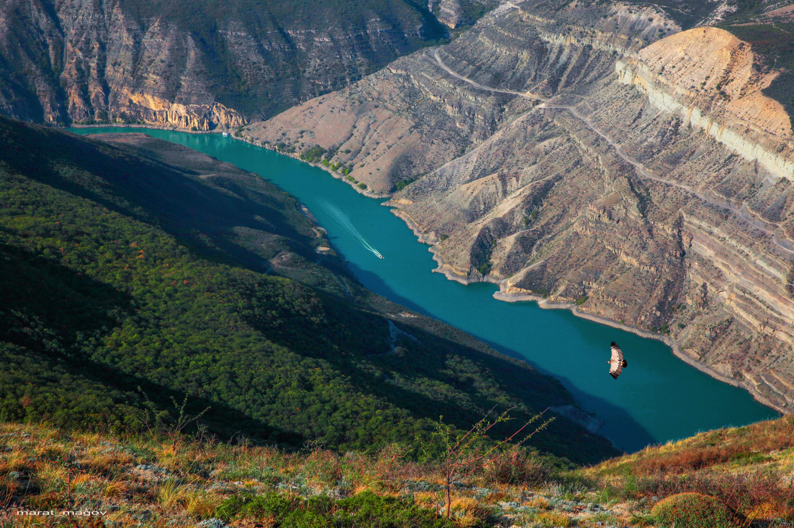

ДАГЕСТАН
Незабываемый отдых в горах и на море

Жемчужина гор
Сулакский каньон — один из самых глубоких каньонов мира, протяженностью 53 километра. Мы полюбуемся на него с разных точек. Остановимся у Чиркейского водохранилища для эффектных фото, затем спустимся к селу Зубутли: нас ждет прогулка на катере по извилистой бирюзовой реке Сулак. После освежающей водной прогулки, мы прогуляемся и пообедаем свежеприготовленной рыбой на форелевом хозяйстве и отправимся исследовать другую, поистине впечатляющую природную достопримечательность.
Программа экскурсии:
Обратите внимание, что программа и условия могут быть изменены, в зависимости от выбора маршрута.
- 07:00
- 19:00
-
За какой период можно бронировать?
Бронирование возможно не позднее чем за 8 часов до начала. Бронируйте сейчас, места могут закончиться! -
Ваш транспорт:
Микроавтобусы Фольксваген и Мерседес.
Маршруты


Отзывы
Контакты
г. Махачкала
8 988 225-23-71
ami.shah@bk.ru
10:00-20:00